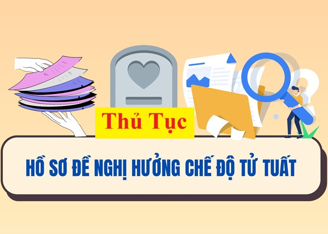

Hướng dẫn làm hồ sơ, thủ tục hưởng chế độ tử quất theo quy định mới nhất năm 2025 tại Quyết định 186/QĐ-BHXH ngày 24 tháng 01 năm 2025 của Bảo hiểm xã hội Việt Nam
I. Trình tự thực hiện:

Bước 1. Lập hồ sơ
Thân nhân NLĐ lập hồ sơ như sau:
1. Đối với thân nhân của người đang đóng BHXH và thân nhân người bảo lưu thời gian đóng BHXH:
a) Bản chính Sổ BHXH.
b) Bản sao Giấy chứng tử hoặc bản sao Giấy báo tử hoặc trích lục khai tử hoặc bản sao Quyết định tuyên bố là đã chết của Tòa án đã có hiệu lực pháp luật.
c) Bản chính Tờ khai của thân nhân (mẫu 09-HSB).
d) Bản chính Biên bản giám định mức suy giảm KNLĐ của Hội đồng GĐYK đối với thân nhân bị suy giảm KNLĐ từ 81% trở lên (trường hợp NLĐ đã có biên bản giám định y khoa để hưởng các chính sách khác trước đó mà đủ điều kiện hưởng thì có thể thay bằng bản sao) hoặc bản sao Giấy xác nhận khuyết tật mức độ đặc biệt nặng (tương đương mức suy giảm KNLĐ từ 81% trở lên) theo quy định tại Thông tư số 01/2019/TT-BLĐTBXH trong trường hợp hưởng trợ cấp tuất hàng tháng do suy giảm KNLĐ.
đ) Trường hợp chết do TNLĐ, BNN thì có thêm Biên bản điều tra TNLĐ hoặc bản sao bệnh án điều trị BNN.
e) Trường hợp thanh toán phí GĐYK thì có thêm Hóa đơn, chứng từ thu phí giám định kèm theo bảng kê các nội dung giám định của cơ sở thực hiện GĐYK.
g) Bản chính Bản khai cá nhân về thời gian, địa bàn phục vụ trong Quân đội có hưởng phụ cấp khu vực (Mẫu số 04C - HBQP ban hành kèm theo Thông tư số 136/2020/TT-BQP ngày 29/10/2020) đối với người có thời gian phục vụ trong Quân đội trước ngày 01/01/2007 tại địa bàn có hưởng phụ cấp khu vực mà sổ BHXH không thể hiện đầy đủ thông tin làm căn cứ tính phụ cấp khu vực.
a) Bản chính Sổ BHXH.
b) Bản sao Giấy chứng tử hoặc bản sao Giấy báo tử hoặc trích lục khai tử hoặc bản sao Quyết định tuyên bố là đã chết của Tòa án đã có hiệu lực pháp luật.
c) Bản chính Tờ khai của thân nhân (mẫu 09-HSB).
Để xem chi tiết và tải Mẫu số 09-HSB về thì các bạn vui lòng xem tại đây:
đ) Trường hợp chết do TNLĐ, BNN thì có thêm Biên bản điều tra TNLĐ hoặc bản sao bệnh án điều trị BNN.
e) Trường hợp thanh toán phí GĐYK thì có thêm Hóa đơn, chứng từ thu phí giám định kèm theo bảng kê các nội dung giám định của cơ sở thực hiện GĐYK.
g) Bản chính Bản khai cá nhân về thời gian, địa bàn phục vụ trong Quân đội có hưởng phụ cấp khu vực (Mẫu số 04C - HBQP ban hành kèm theo Thông tư số 136/2020/TT-BQP ngày 29/10/2020) đối với người có thời gian phục vụ trong Quân đội trước ngày 01/01/2007 tại địa bàn có hưởng phụ cấp khu vực mà sổ BHXH không thể hiện đầy đủ thông tin làm căn cứ tính phụ cấp khu vực.
Để xem chi tiết và tải Mẫu số 04C-HBQP về thì các bạn vui lòng xem tại đây:
2. Đối với thân nhân của người đang hưởng hoặc tạm dừng hưởng lương hưu, trợ cấp BHXH hằng tháng: Hồ sơ như quy định tại các điểm b, c, d, e mục 1.
Lưu ý: Trường hợp không quy định là bản chính thì có thể nộp bản sao hợp lệ. Trường hợp nộp hồ sơ trực tuyến: thành phần hồ sơ quy định là bản sao nhưng NLĐ có thể nộp bản chính điện tử.
Bước 2. Nộp hồ sơ
1. Trường hợp NLĐ đang đóng BHXH bắt buộc mà bị chết: Thân nhân nộp hồ sơ cho đơn vị SDLĐ. Đơn vị SDLĐ tiếp nhận đủ hồ sơ từ thân nhân NLĐ, nộp hồ sơ cho cơ quan BHXH nơi đơn vị đóng BHXH.
2. Trường hợp NLĐ bị chết mà đang bảo lưu thời gian đóng BHXH bắt buộc (áp dụng đối với cả trường hợp người bị chết trong thời gian đang đóng BHXH mà đơn vị SDLĐ đã thực hiện chốt sổ BHXH nếu thân nhân có nguyện vọng trực tiếp nộp hồ sơ, trừ trường hợp chết do TNLĐ, BNN) hoặc đang chờ đủ điều kiện về tuổi đời để hưởng chế độ hưu trí, trợ cấp cán bộ xã hàng tháng hoặc tham gia BHXH tự nguyện: Thân nhân nộp hồ sơ theo quy định cho cơ quan BHXH.
3. Trường hợp người đang hưởng hoặc đang tạm dừng hưởng lương hưu, trợ cấp BHXH hàng tháng chết: Thân nhân nộp hồ sơ cho cơ quan BHXH nơi đang chi trả lương hưu, trợ cấp BHXH hàng tháng của NLĐ (đối với trường hợp đang hưởng) hoặc nơi đang chi trả trước khi tạm dừng hưởng (đối với trường hợp đang tạm dừng hưởng).
2. Trường hợp NLĐ bị chết mà đang bảo lưu thời gian đóng BHXH bắt buộc (áp dụng đối với cả trường hợp người bị chết trong thời gian đang đóng BHXH mà đơn vị SDLĐ đã thực hiện chốt sổ BHXH nếu thân nhân có nguyện vọng trực tiếp nộp hồ sơ, trừ trường hợp chết do TNLĐ, BNN) hoặc đang chờ đủ điều kiện về tuổi đời để hưởng chế độ hưu trí, trợ cấp cán bộ xã hàng tháng hoặc tham gia BHXH tự nguyện: Thân nhân nộp hồ sơ theo quy định cho cơ quan BHXH.
3. Trường hợp người đang hưởng hoặc đang tạm dừng hưởng lương hưu, trợ cấp BHXH hàng tháng chết: Thân nhân nộp hồ sơ cho cơ quan BHXH nơi đang chi trả lương hưu, trợ cấp BHXH hàng tháng của NLĐ (đối với trường hợp đang hưởng) hoặc nơi đang chi trả trước khi tạm dừng hưởng (đối với trường hợp đang tạm dừng hưởng).
Bước 3. Cơ quan BHXH tiếp nhận hồ sơ và giải quyết theo quy định.
Bước 4. Nhận kết quả giải quyết
1. Đơn vị SDLĐ: Nhận Quyết định về việc hưởng trợ cấp mai táng, Quyết định về việc hưởng chế độ tử tuất hàng tháng hoặc một lần; bản quá trình đóng BHXH; Thông báo về việc chi trả lương hưu, trợ cấp BHXH đối với trường hợp di chuyển hưởng chế độ BHXH tại huyện/tỉnh khác để trả cho thân nhân NLĐ đối với các trường hợp nêu tại điểm 1 bước 2 bên trên.
2. Thân nhân NLĐ:
- Nhận tiền trợ cấp
- Thân nhân NLĐ nêu tại điểm 2, 3 bước 2 mục 7.1: Nhận Quyết định về việc hưởng trợ cấp mai táng, Quyết định về việc hưởng chế độ tử tuất hàng tháng hoặc một lần; bản quá trình đóng BHXH (đối với người đang tham gia hoặc bảo lưu thời gian đóng BHXH bị chết); Thông báo về việc chi trả lương hưu, trợ cấp BHXH đối với trường hợp di chuyển hưởng chế độ BHXH tại huyện/tỉnh khác.
2. Thân nhân NLĐ:
- Nhận tiền trợ cấp
- Thân nhân NLĐ nêu tại điểm 2, 3 bước 2 mục 7.1: Nhận Quyết định về việc hưởng trợ cấp mai táng, Quyết định về việc hưởng chế độ tử tuất hàng tháng hoặc một lần; bản quá trình đóng BHXH (đối với người đang tham gia hoặc bảo lưu thời gian đóng BHXH bị chết); Thông báo về việc chi trả lương hưu, trợ cấp BHXH đối với trường hợp di chuyển hưởng chế độ BHXH tại huyện/tỉnh khác.
II. Cách thức thực hiện
1. Nộp hồ sơ:
Đơn vị SDLĐ, thân nhân NLĐ nộp hồ sơ bằng một trong các hình thức sau:
- Trực tuyến (trường hợp nộp hồ sơ: hồ sơ giấy không chuyển đổi được sang hồ sơ điện tử thì đơn vị gửi hồ sơ giấy về cơ quan BHXH qua dịch vụ bưu chính).
- Trực tiếp tại cơ quan BHXH hoặc Trung tâm phục vụ HCC các cấp (nếu có).
- Qua dịch vụ bưu chính công ích.
- Trực tuyến (trường hợp nộp hồ sơ: hồ sơ giấy không chuyển đổi được sang hồ sơ điện tử thì đơn vị gửi hồ sơ giấy về cơ quan BHXH qua dịch vụ bưu chính).
- Trực tiếp tại cơ quan BHXH hoặc Trung tâm phục vụ HCC các cấp (nếu có).
- Qua dịch vụ bưu chính công ích.
2. Nhận kết quả:
- Đơn vị SDLĐ, thân nhân NLĐ nhận hồ sơ, giấy tờ liên quan: Theo hình thức đăng ký nhận hồ sơ (trực tiếp tại cơ quan BHXH hoặc qua dịch vụ bưu chính công ích hoặc qua giao dịch điện tử.
- Tiền trợ cấp: Thân nhân NLĐ nhận theo một trong các hình thức sau:
+ Thông qua tài khoản cá nhân.
+ Bằng tiền mặt tại cơ quan BHXH (đối với nhận trợ cấp một lần).
+ Bằng tiền mặt thông qua tổ chức dịch vụ chi trả (đối với hưởng chế độ hàng tháng).
- Tiền trợ cấp: Thân nhân NLĐ nhận theo một trong các hình thức sau:
+ Thông qua tài khoản cá nhân.
+ Bằng tiền mặt tại cơ quan BHXH (đối với nhận trợ cấp một lần).
+ Bằng tiền mặt thông qua tổ chức dịch vụ chi trả (đối với hưởng chế độ hàng tháng).
| Số lượng hồ sơ | 01 bộ |
| Thời hạn giải quyết | Tối đa 08 ngày làm việc kể từ ngày cơ quan BHXH nhận đủ hồ sơ theo quy định. |
| Đối tượng thực hiện TTHC | Tổ chức, cá nhân |
| Cơ quan thực hiện TTHC | BHXH tỉnh/huyện theo phân cấp giải quyết. |
| Kết quả thực hiện TTHC |
- Quyết định về việc hưởng trợ cấp mai táng (mẫu 08A- HSB) đối với trường hợp đang tham gia hoặc đang bảo lưu thời gian đóng BHXH bị chết có thân nhân hưởng trợ cấp tuất hàng tháng; - Quyết định về việc hưởng trợ cấp mai táng (mẫu 08B- HSB) áp dụng đối với trường hợp đang hưởng lương hưu, trợ cấp BHXH hàng tháng bị chết có thân nhân hưởng trợ cấp tuất hàng tháng; - Quyết định về việc hưởng chế độ tử tuất hàng tháng (mẫu 08C-HSB) - Quyết định về việc hưởng chế độ tử tuất một lần (mẫu 08D-HSB) áp dụng đối với thân nhân người đang tham gia hoặc bảo lưu thời gian đóng BHXH bị chết - Quyết định về việc hưởng chế độ tử tuất một lần (mẫu 08E-HSB) áp dụng đối với thân nhân người đang hưởng lương hưu, trợ cấp BHXH hàng tháng chết. - Bản quá trình đóng BHXH (đối với trường hợp người đang tham gia BHXH hoặc bảo lưu thời gian đóng BHXH bị chết). - Thông báo về việc chi trả lương hưu, trợ cấp BHXH đối với trường hợp di chuyển hưởng chế độ BHXH tại huyện/tỉnh khác (Mẫu 23-HSB). - Tiền trợ cấp. |
| Lệ phí | Không |
| Tên mẫu đơn, mẫu tờ khai |
- Tờ khai của thân nhân (mẫu số 09-HSB); - Bản khai cá nhân về thời gian, địa bàn phục vụ trong Quân đội có hưởng phụ cấp khu vực (Mẫu số 04C - HBQP ban hành kèm theo Thông tư số 136/2020/TT- BQP ngày 29/10/2020); |
| Yêu cầu, điều kiện thực hiện TTHC |
1. Điều kiện hưởng trợ cấp mai táng: Điều 66, 80 Luật BHXH; Điều 53 Luật An toàn vệ sinh lao động; Điều 12, 13 Nghị định số 115/2015/NĐ-CP; Điều 8 Nghị định số 134/2015/NĐ-CP; Điều 24, 38 Thông tư số 59/2015/TT- BLĐTBXH; khoản 2 Điều 7 Thông tư số 01/2016/TT- BLĐTBXH; Khoản 5 Điều 17 Thông tư số 105/2016/TTLT-BQP-BCA-BLĐTBXH; Khoản 1 Điều 2 QĐ 250/QĐ-TTg. 2. Điều kiện hưởng trợ cấp tuất hàng tháng: Điều 67 Luật BHXH; khoản 4 Điều 12, Điều 13, Khoản 1 Điều 14 Nghị định số 115/2015/NĐ-CP; Khoản 3 Điều 8 Nghị định số 134/2015/NĐ-CP; Điều 25 Thông tư số 59/2015/TT-BLĐTBXH; Khoản 5 Điều 17 Thông tư số 105/2016/TTLT-BQP-BCA-BLĐTBXH. 3. Điều kiện hưởng trợ cấp tuất một lần: Điều 69, 81 Luật BHXH; Khoản 5 Điều 12, Điều 13, khoản 2 điều 14 Nghị định số 115/2015/NĐ-CP; khoản 4,5 Nghị định số 134/2015/NĐ-CP; điều 27 Thông tư số 59/2015/TT- BLĐTBXH; khoản 4 Điều 7 Thông tư số 01/2016/TT- BLĐTBXH; Khoản 5 Điều 17 Thông tư số 105/2016/TTLT-BQP-BCA-BLĐTBXH. |
| Căn cứ pháp lý của TTHC |
- Luật BHXH số 58/2014/QH13 (20/11/2014); - Luật An toàn, VSLĐ số 84/2015/QH13 (25/6/2015); - Nghị định số 115/2015/NĐ-CP (11/11/2015); - Nghị định số 134/2015/NĐ-CP (29/12/2015); - Nghị định số 33/2016/NĐ-CP (10/5/2016); - Nghị định số 39/2016/NĐ-CP (15/5/2016); - Nghị định số 166/2016/NĐ-CP (24/12/2016); - Nghị định số 143/2018/NĐ-CP (15/10/2018); - Nghị định số 88/2020/NĐ-CP (28/7/2020); - Quyết định số 1380/QĐ-TTg (18/10/2018); - Quyết định số 250/QĐ-TTg (29/01/2013); - Thông tư số 59/2015/TT-BLĐTBXH (29/12/2015); - Thông tư số 01/2016/TT-BLĐTBXH (18/02/2016); - Thông tư số 136/2020/TT-BQP ngày 29/10/2020; - Thông tư số 01/2019/TT-BLĐTBXH (02/01/2019); - Thông tư số 06/2021/TT-BLĐTBXH (07/07/2021); - Quyết định 838/QĐ-BHXH (29/5/2017; - Quyết định số 2525/VBHN-BHXH (15/08/2023); - Quyết định số 686/QĐ-BHXH (29/05/2024); - Công văn số 4831/LĐTBXH-BHXH (17/11/2017); - Công văn số 2430/BHXH-CSXH (ngày 19/7/2024); - Quyết định số 1449/QĐ-BHXH (ngày 19/8/2024). |